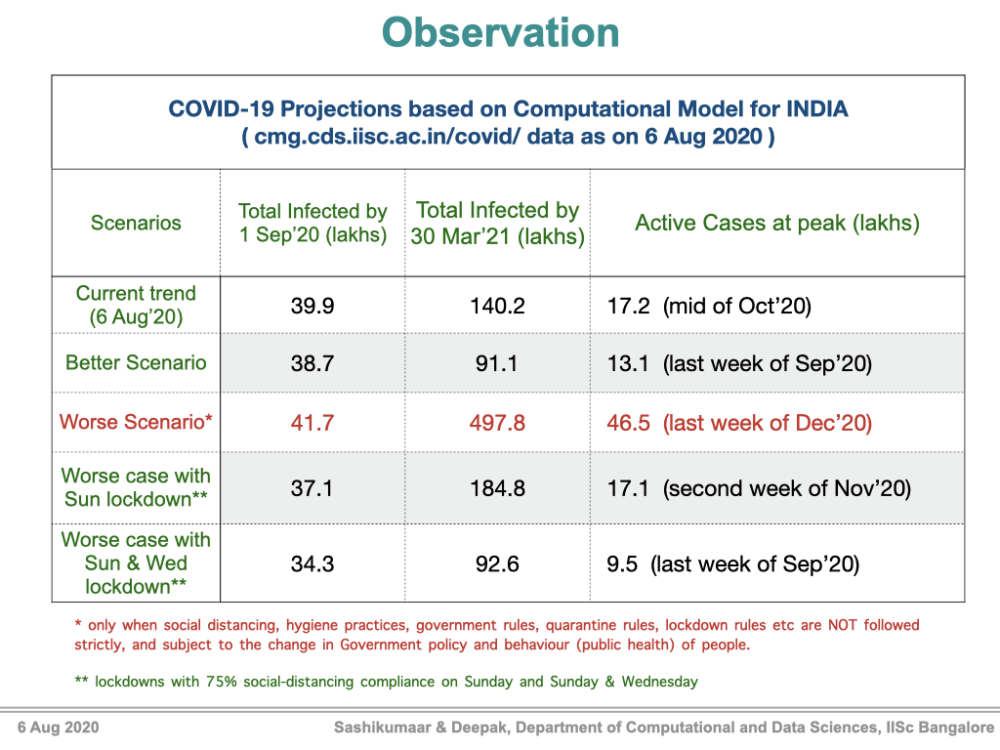

PDE-based modelling of Covid-19 infections
The developed model is a paradigm shift in mathematical modeling of infectious diseases.
This modeling framework introduces a multi-dimensional equation to predict the spread of pandemics with insights into the severity of infection, duration of infection, population age etc. Such insightful predictions are key for planning lockdown/unlock strategies and public health policies such as quarantine rules, hospital beds, health insurance and vaccination/treatment scheduling. Moreover, these insights can be used to formulate science-informed policy to revive normalcy in the world, especially from the disruption induced by Covid-19. A detailed description of the predictive modeling framework can be found here. arXiv:2006.15336 .
Model predictions updated on Aug 06, 2020 . For previous results click here (Aug 06, 2020), (Jun 18, 2020), (May 28, 2020) and (May 3, 2020).
Key Observations
- The recovery rate has increased since May 3, 2020 and consequently reduced new infections. It emphasises the importance of appropriate medical care and timely quarantine.
- Among all measures, contact tracing, quarantine and social distancing are key to contain the spread in the absence of vaccine.
- One or two day lockdown per week (e.g., Sunday, Sunday & Wednesday etc) with complete compliance along with adequate social distancing during other days is effective to reduce the spread.
- Proposed model can be used to predict region-wise and age-wise COVID-19 spread accurately, and consequently it can be used to frame policies on periodic lockdown, staggered opening of educational institutions and public facilities.
Choose India/State/UT*
Chart loading
Select
Duration
Duration
(Click on the above square buttons to remove/add a plot.
Use the time slider to adjust time period.)
Computational Model
- Data* between 23 Mar and 06 Aug, 2020 is used partially to tune the parameters of the data-driven model. These results are current as of Aug 06, 2020.
- State-wise results are computed with the parameters of national trend to compare the performance of the respective state with the national trend. See Discussion for interpretation.
- Quarantine of Active Cases so as to prevent new infections is the key to contain the pandemic. An adaptive quarantine function in our model ensures that infected population is quarantined based on their infection level (showing symptoms) and based on latest published literature on how the infection spreads from infected population.
- The severity of the infection is taken into consideration while modeling the infectious death rate function (see the rate functions in the model).
- Differnt scenarios are modeled based on anticipated individual behavior (social distancing, hygiene practice, compliance to government rules etc.), government policies (quarantine rules, lockdown rules etc.).
- Current Trend follows business as usual assuming further relaxation to lockdown rules. Better and Worse Scenarios assume better and worse compliance. Weekly lockdown models the impact of lockdowns with 75 % Social-distancing compliance on Sunday and Sunday & Wednesday, respectively. 
Observations
- Current Trend: Hits a peak of 17.2 lakh ‘Active Cases’ in the mid of October 2020. Further, there will be around 46 thousand ‘Active Cases’, 2 lakh deaths and 1.4 crore total cases at the end of March 2021.
- Better Scenario: Hits a peak of 13.1 lakh 'Active Cases' in the last week of September 2020. Further, there will be around 5 thousand ‘Active Cases’, 1.43 lakh deaths and 91.1 lakh total cases at the end of March 2021.
- Worse Scenario: Hits a peak of 46.5 lakh 'Active Cases' in the last week of December 2020. There will around 20.45 lakh ‘Active Cases’, 5.8 lakh deaths and 4.978 crore total cases at the end of March 2021.
- Current Trend with Sunday Lockdown:Hits a peak of 17.1 lakh ‘Active Cases’ in the second week of November 2020. Further, there will be around 4.0368 lakh ‘Active Cases’, 2.45 lakh deaths and 1.848 crore total cases at the end of March 2021.
- Current Trend with Sun & Wed Lockdown: Hits a peak of 9.5 lakh Active Cases in the last week of September 2020. Further, there will around 73.55 thousand ‘Active’ Cases, 1.414 lakh deaths and 92.6 lakh total cases at the end of March 2021.
Discussion
- In order to achieve and follow the Current Trend prediction for the next one year, people should maintain the same or even better level of social distancing as maintained during 23 Mar - 06 Aug 2020. It is assumed that awareness increases with time and there is more compliance of social distancing and other norms. Also, we anticipate that more members of the susceptible population improve their hygiene practice and immunity levels.
- Until the development of vaccines, social distancing and other practices to reduce interaction among people (such as avoiding mass gathering etc.) are the key tools to contain the spread of COVID-19. As such, public awareness of these practices through several modes (advertisements through TV, radios, new papers, social media, etc.) is crucial.
- The Better Scenario and Worse Scenario model the infection spread when there is better and worse compliance of social distancing and other norms among susceptible population.
- Short, periodic (e.g., one or two days per week) lockdown with strict compliance to stay at home and avoid interaction helps reduce infection. This must be combined with increased social distancing and quarantining of suspected population during non-lockdown phases. The ‘Sunday Lockdown’ and ‘Sun & Wed Lockdown’ scenarios model these strategies.
- Since this is an active situation with regular ongoing interventions and policy changes from State and Central governments, we do not predict each state individually and the state numbers have to be interpreted as follows:
- In each scenario, the state numbers are computed with the national parameters. This is done to compare the actual data of the state with the national trend.
- For example, Kerala, Uttar Pradesh (and others) have done better than the national trend. Whereas, Maharashtra, Tamil Nadu, Karnataka, Madhya Pradesh (and others) have done worse than the national trend. Some states such as Rajasthan, Andhra Pradesh (and others) have done similar to the national trend. Notably, Delhi has become better than the national average, though it was worse at the beginning of pandemic.
- The forecast range of all predicted scenarios (some shown here, others not shown) can be viewed by enabling the uncertainty region in the time series plots. The region may be interpreted as the "Confidence Interval" for the forecast numbers.
State Performance Compared to National Trend
Team
- Lead: Prof. Sashikumaar Ganesan and Prof. Deepak Subramani CDS, IISc Bangalore, India
- Email: sashi@iisc.ac.in, deepakns@iisc.ac.in
- Members: Chris Francis
Acknowledgements
- COVID19-India API
- DataMeet/maps
- Members of eXComp group, CDS, IISc Bangalore
- Special thanks to all well wishers and colleagues for the discussion and feedback on our model.
- We thank the Indian Academy of Science Summer Fellowship Program for the support to Chris.
- Deepak wishes to acknowledge DST Inspire and Arcot Ramachandran Young Investigator Awards.
- Sashi wishes to acknowledge SERB, DST, DRDO, DAAD and AvH for the grants that supported for the development of ParMooN.